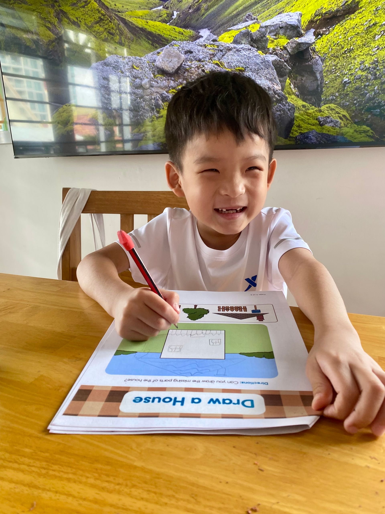
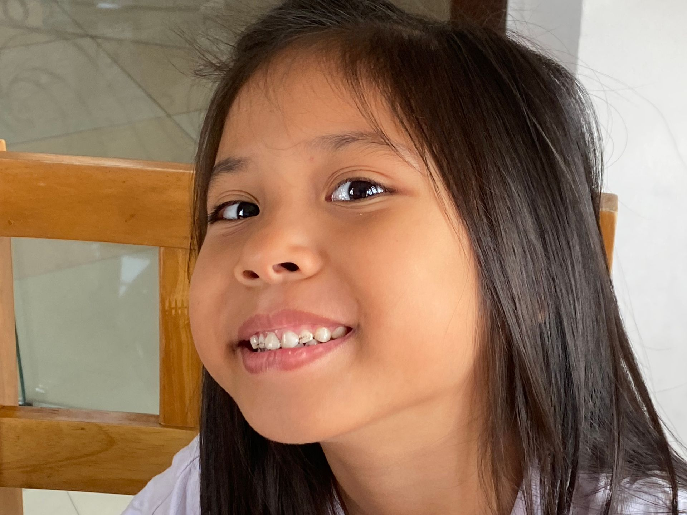
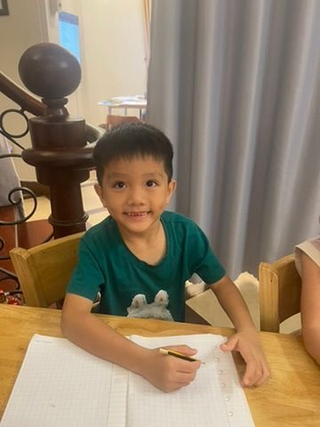
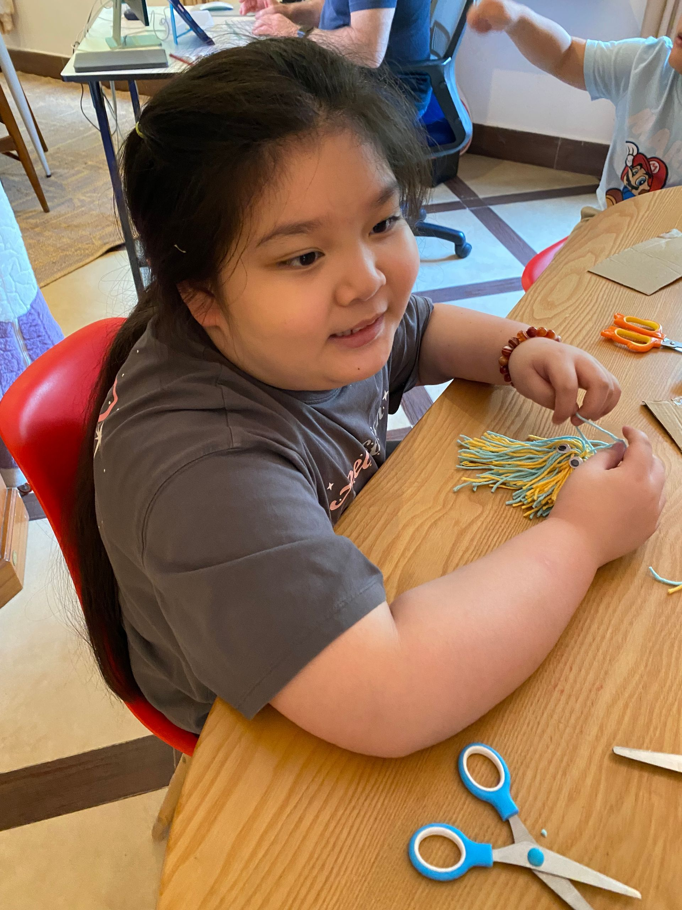
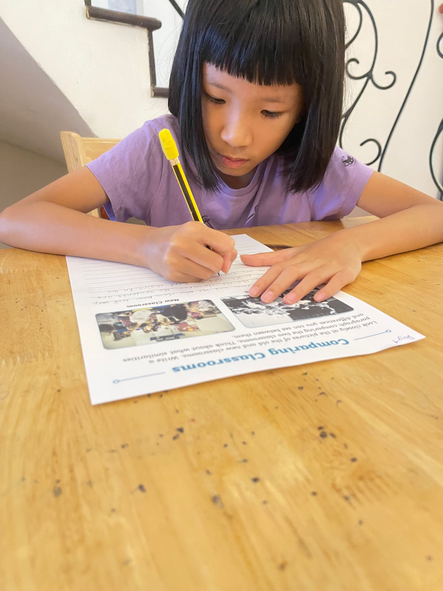
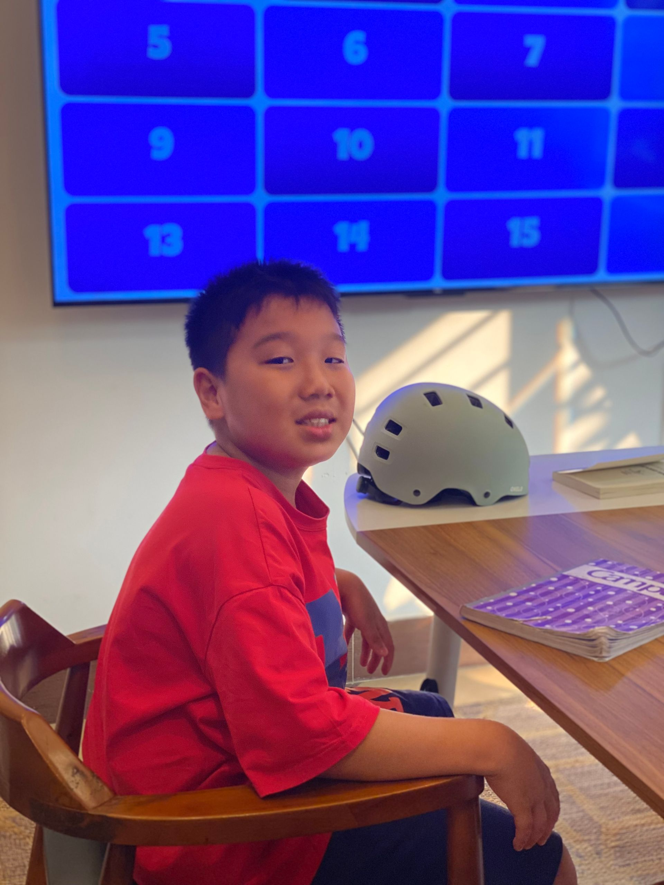
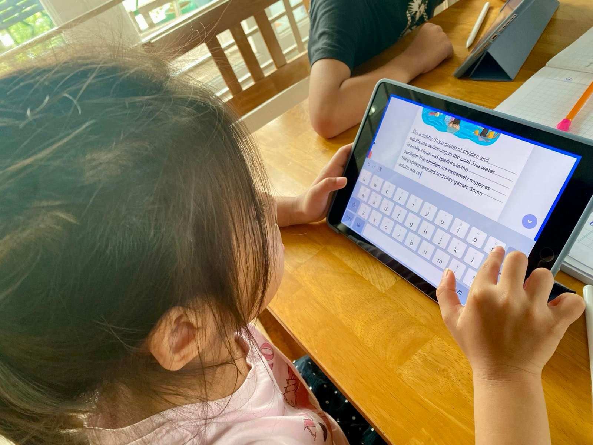
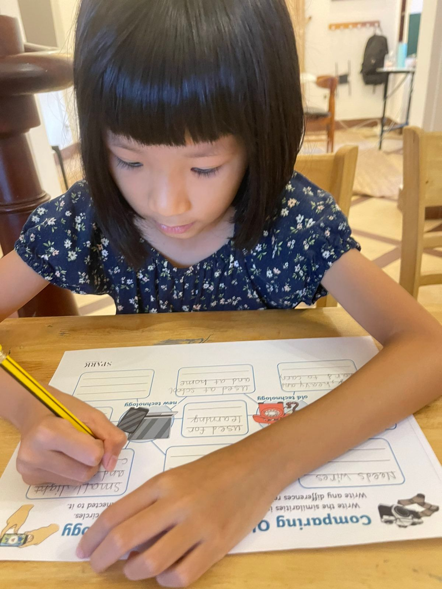

The IB English Program at a glance
- Levels 6 to 13: from paragraph writing to Pre-GCSE and advanced academic literacy.
- Focus: reading, writing, literary analysis, academic vocabulary and critical thinking.
- Designed for international school, IB, BIS and AIS students.
- Placement is determined through assessment, not age alone.
Developing Strong Readers, Writers, and Thinkers
Many students can communicate confidently in English. Far fewer can analyze a text, develop a convincing argument, write a structured essay, evaluate evidence, or discuss complex ideas with confidence.
As students move through international schools, academic expectations increase significantly. They are expected to read increasingly sophisticated texts, think critically, organize ideas effectively, and communicate their understanding through speaking and writing.
The Spark IB English Program is designed for students who are ready to move beyond conversational English and develop the advanced literacy skills needed for academic success. This program focuses on reading, writing, analysis, vocabulary development, and critical thinking.
Students learn how to:
- Analyze texts
- Write effectively
- Organize ideas logically
- Develop arguments
- Engage with literature
- Evaluate evidence
- Support opinions
- Think critically
- Communicate with precision
The program progresses from paragraph writing and reading comprehension through literary analysis, academic writing, and pre-GCSE level English.
Our goal is not simply to improve English grades. Our goal is to develop confident readers, capable writers, and independent thinkers.

Why Academic English Matters
Many students appear fluent in English but struggle when faced with academic tasks. They may be able to hold conversations comfortably yet find it difficult to:
- Analyze a text
- Explain an author's purpose
- Write an essay
- Support opinions with evidence
- Interpret literary devices
- Evaluate arguments
- Organize complex ideas
Academic English requires a different set of skills than conversational English. Students must learn how language works in academic contexts and how to communicate sophisticated ideas effectively.
These skills support success across:
- English
- Humanities
- Science
- IB Programmes
- International school curricula
- Future examination pathways
Academic English is the language of learning.
The Spark Approach
The IB English Program follows a structured pathway that develops literacy and academic communication skills over time.
Students are encouraged to:
- Read critically
- Discuss ideas thoughtfully
- Write regularly
- Analyze evidence
- Build academic vocabulary
- Reflect on their thinking
- Develop independent learning habits
The program combines:
- Reading instruction
- Writing instruction
- Vocabulary development
- Literary analysis
- Discussion and debate
- Critical thinking
- Research skills
Each level builds upon previous learning and prepares students for increasingly demanding academic tasks.
Program Levels

Building Strong Writing Foundations
Students begin developing the skills needed for academic writing.
Focus Areas
- Grammar accuracy
- Sentence structure
- Paragraph writing
- Vocabulary development
- Reading comprehension
- Responding to texts
Students learn how to organize ideas clearly and communicate effectively through writing.
Outcome
Students produce structured paragraphs and demonstrate improved reading comprehension.

Expanding Reading and Writing Skills
Students begin working with longer texts and more detailed written responses.
Focus Areas
- Reading comprehension
- Paragraph development
- Descriptive writing
- Vocabulary expansion
- Summarizing information
- Text discussion
Students learn how to support ideas with examples and explain their thinking more clearly.
Outcome
Students communicate ideas more confidently through both speaking and writing.

Developing Academic Communication
Students begin transitioning toward more analytical reading and writing.
Focus Areas
- Multi-paragraph writing
- Text analysis
- Academic vocabulary
- Reading strategies
- Evidence-based responses
- Discussion skills
Students learn how to explain ideas using evidence from texts.
Outcome
Students become more confident readers and writers capable of handling increasingly complex tasks.

Introduction to Literary Analysis
Students begin exploring literature more deeply.
Focus Areas
- Character analysis
- Theme exploration
- Author's purpose
- Text interpretation
- Analytical writing
- Literary discussion
Students move beyond understanding what happened in a text and begin exploring why it matters.
Outcome
Students develop stronger analytical thinking and literary understanding.

Academic Writing and Argument Development
Students learn how to communicate ideas in a more formal academic style.
Focus Areas
- Essay structure
- Argument development
- Supporting evidence
- Formal writing
- Critical reading
- Academic vocabulary
Students learn how to construct logical arguments and support opinions effectively.
Outcome
Students produce more sophisticated and persuasive writing.

Pre-GCSE Academic English
Students develop the skills required for advanced academic study.
Focus Areas
- Essay writing
- Textual analysis
- Research and evaluation
- Academic communication
- Critical thinking
- Independent learning
Students learn how to approach texts with greater depth and sophistication.
Outcome
Students are prepared for increasingly demanding academic expectations.

Advanced Academic Literacy
The highest level of the program focuses on preparing students for upper-secondary academic study.
Focus Areas
- Advanced essay writing
- Comparative analysis
- Literary criticism
- Evaluation and synthesis
- Formal communication
- Academic independence
Students are expected to think critically, communicate clearly, and engage confidently with complex texts.
Outcome
Students become confident academic readers, writers, and thinkers prepared for future educational challenges.
Who Is This Program For?
This program is ideal for:
- International school students
- IB students
- BIS students
- AIS students
- Students preparing for secondary English
- Students who need stronger writing skills
- Students who enjoy reading and literature
- Students preparing for future academic pathways
It is particularly beneficial for students who are ready to move beyond conversational English and develop stronger academic literacy skills.
What Progress Looks Like
As students move through the program, parents often notice:
- More sophisticated writing
- Improved reading comprehension
- Expanded vocabulary
- Greater confidence in discussing texts
- Stronger analytical thinking
- Better organization of ideas
- Increased academic independence
- Improved school performance
Many students become more confident not only in English but across multiple academic subjects.
The Spark Difference
Many English programs focus primarily on communication. The Spark IB English Program focuses on literacy and academic success.
Students learn to:
- Read critically
- Think deeply
- Write effectively
- Analyze evidence
- Build arguments
- Communicate with precision
Rather than simply preparing students for tests, we develop the skills that support long-term academic achievement.
Not Sure Where to Start?
Book a free assessment and receive personalized recommendations based on your child's age, school background, English level, and academic goals.
Book a Free AssessmentFAQs
As students move into higher levels of English, the focus shifts from learning the language to using the language for academic success. Parents often have questions about academic writing, literary analysis, reading comprehension, critical thinking, and how the IB English Program supports students in international school environments. Below are answers to some of the most common questions we receive about our Academic English and IB English Program.
What is the difference between ESL and IB English?
The ESL Program focuses on developing communication skills and language fluency. The IB English Program focuses on academic reading, writing, analysis, vocabulary development, and critical thinking.
Students typically progress into the IB English Program after developing a strong foundation in English communication.
Is this suitable for international school students?
Yes. The program was specifically designed to support the literacy and academic language demands found in international school environments.
Does the program improve essay writing?
Absolutely. Students develop paragraph writing, essay structure, argument development, evidence use, editing skills, and academic writing techniques.
Does it support BIS and IB students?
Yes. The literacy, writing, and analytical skills developed in the program support students studying within IB, British, Australian, and other international curricula.
What age is the IB English Program designed for?
The program is generally designed for upper-primary and secondary students who are ready to move beyond conversational English and develop academic literacy skills. Placement is determined through assessment rather than age alone.
My child speaks English fluently. Will this program still help?
Yes. Many fluent English speakers still require support with academic writing, reading comprehension, literary analysis, and critical thinking. This program focuses on those higher-level skills.
Does the program include literature study?
Yes. Students engage with a variety of texts and learn how to analyze characters, themes, language choices, and author intent.
How is progress monitored?
Progress is monitored through:
- Writing samples
- Reading assessments
- Vocabulary development
- Classroom discussions
- Analytical tasks
- Teacher observations
This allows us to track growth and adjust instruction as needed.
Prepare for Academic Success
Strong academic English skills open doors to future educational opportunities. Whether your child needs support with writing, reading comprehension, literary analysis, or critical thinking, the first step is understanding their current level.
Book a free assessment and discover how the Spark IB English Program can help your child become a stronger reader, writer, and thinker.